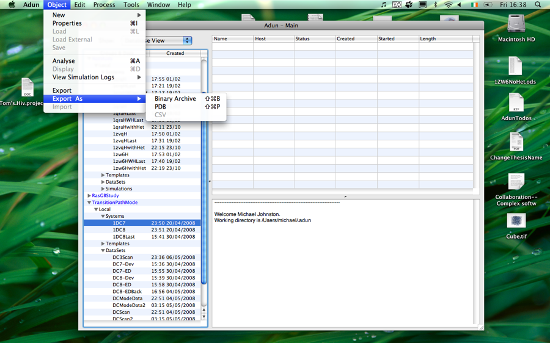

Exporting Data
Since Adun's data is stored in the programs databases it is not readily accessible through file browsers. This is a problem if you would like to send a copy of the data to someone else. Moreover the data is stored in a non-human readable format and often you would like to convert it to a different one, for example a PDB file. Exporting allows you to do both these things ...

To export data:
- Select the data you want to export.
- Choose Object->Export - this brings up the export panel
- The options under 'Object->Export As' provide a quick way to export in some common formats.
- The available types the data can be exported as will be shown. Choose the appropriate one.
- Click 'Export'. This brings up the Save panel where you can choose where to save the file and what name to give it.